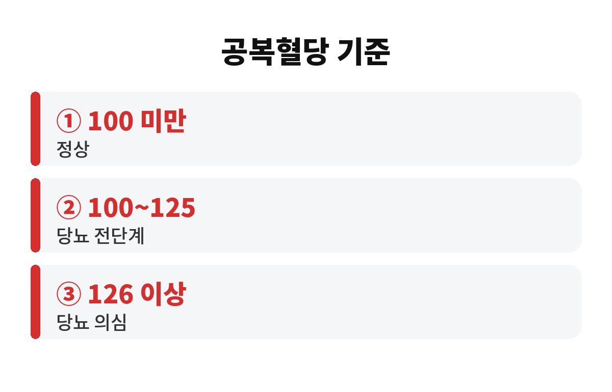
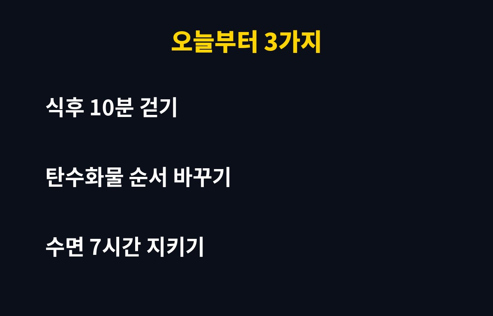

공복혈당 정상수치는 100mg/dL 미만이고, 100~125는 당뇨 전단계, 126 이상이면 당뇨가 의심되는 구간이에요. 건강검진표에서 이 숫자가 하나라도 빨갛게 찍혀 있다면, 40대 직장인이라면 특히 그냥 넘기기 어려운 신호예요.
"조금 높은 건데 괜찮겠지?" 하고 접어둔 분들 많으시죠. 그런데 이 숫자, 정말 방치해도 되는 걸까요? 오늘 차근차근 풀어볼게요.
공복혈당은 8시간 이상 아무것도 먹지 않은 상태에서 잰 혈당이에요. 대한당뇨병학회 등에서 쓰는 일반적인 기준은 이렇게 나뉩니다.
| 공복혈당(mg/dL) | 분류 |
| 100 미만 | 정상 |
| 100~125 | 당뇨 전단계(공복혈당장애) |
| 126 이상 | 당뇨병 의심(재검 필요) |
여기서 중요한 포인트가 하나 있어요. 126 이상이 한 번 나왔다고 바로 당뇨 확정은 아니에요. 보통 다른 날 한 번 더 재거나, 당화혈색소(HbA1c) 검사를 같이 해서 판단하거든요. 반대로 100~125는 "아직 약 먹을 단계는 아니니까 안심"이 아니라, 지금이 가장 되돌리기 쉬운 시기라는 뜻이에요.
당뇨 전단계라고 해서 모두 당뇨가 되는 건 아니에요. 생활습관을 바꾸면 정상으로 돌아오는 분도 분명히 있어요. 다만 아무것도 바꾸지 않으면 시간이 지나면서 당뇨로 넘어갈 가능성이 올라간다고 알려져 있어요.
특히 이런 분들은 더 신경 쓰셔야 해요. 배가 나오는 복부비만이 있는 분, 가족 중에 당뇨 환자가 있는 분, 운동은 거의 안 하고 앉아서 일하는 분, 야식이나 단 음료가 습관인 분이에요. 직장인 중에 해당되는 분이 꽤 많죠. 공복혈당 정상수치를 벗어났다는 건 몸이 "인슐린이 예전만큼 일을 못 해요" 하고 보내는 첫 경고라고 보시면 돼요.
여기에 하나 더. 공복혈당만 보지 말고 같은 검진표의 허리둘레, 중성지방, 혈압 수치도 같이 보세요. 이 숫자들이 함께 올라가 있으면 대사증후군 쪽 신호일 수 있어서, 혈당 하나만 따로 떼어 보는 것보다 훨씬 정확하게 내 몸 상태를 짚을 수 있어요. 숫자 하나에 놀라기보다 전체 그림을 보는 게 중요하죠.

의외로 공복혈당은 검사 전날 컨디션에 영향을 받아요. 전날 늦게까지 야식을 먹었거나, 잠을 거의 못 잤거나, 스트레스를 심하게 받았다면 평소보다 높게 나올 수 있거든요. 그래서 한 번 높게 나왔다고 너무 겁먹을 필요는 없지만, 반대로 "어쩌다 한 번이겠지" 하고 넘기는 것도 위험해요.
정확히 알고 싶다면 같은 조건에서 다시 재보는 게 가장 좋아요. 8시간 이상 공복을 지키고, 전날 과음은 피하고, 아침에 병원이나 보건소에서 재검을 받아보세요. 필요하면 의사가 당화혈색소를 같이 보자고 할 거예요. 당화혈색소는 최근 2~3개월 평균 혈당을 보여줘서 하루 컨디션에 덜 흔들려요.
거창한 계획은 오래 못 가요. 딱 세 가지만 해보세요.
첫째, 식후 10분 걷기. 밥 먹고 바로 앉아 계시지 말고 가볍게 걷기만 해도 식후 혈당이 덜 오르는 걸 도와줘요. 점심 먹고 회사 근처 한 바퀴, 이게 시작이에요.
둘째, 먹는 순서 바꾸기. 채소와 단백질을 먼저, 밥이나 면 같은 탄수화물은 나중에 드세요. 같은 음식을 먹어도 혈당이 천천히 오르는 데 도움이 된다고 알려져 있어요. 단 음료나 믹스커피는 줄이는 게 좋고요.
셋째, 잠 챙기기. 수면이 부족하면 인슐린 효과가 떨어질 수 있어요. 가능하면 하루 7시간 안팎은 자려고 해보세요. 운동만큼 중요한 게 잠이에요.
그리고 꼭 기억하셨으면 하는 게 있어요. 혈당은 "한 번 관리하면 끝"이 아니라 습관이에요. 처음 2주는 식후 걷기만, 그다음 2주는 단 음료 줄이기, 이런 식으로 하나씩 쌓아가면 부담이 훨씬 적어요. 주변에 같이 할 사람이 있으면 더 오래 가고요. 동료와 점심 산책을 약속하는 것만으로도 큰 도움이 돼요.
또 한 가지, 체중을 한꺼번에 많이 빼려고 굶는 방법은 오히려 몸에 무리를 줄 수 있어요. 현재 체중의 5% 안팎만 천천히 줄여도 혈당 관리에 도움이 된다고 알려져 있으니, 급하게 하지 말고 꾸준히 하는 쪽을 택하세요. 약을 드시는 분이라면 임의로 식단을 바꾸기 전에 반드시 담당 의사와 먼저 상의하시고요.

이렇게 몇 달만 꾸준히 해도 검진에서 숫자가 달라지는 분들이 많아요. 물론 개인차는 있으니, 숫자가 계속 높다면 꼭 병원에서 상담을 받아보세요.
혹시 올해 검진에서 공복혈당이 몇이었는지 기억나세요? 내년 검진표에서 이 숫자가 내려가 있다면 기분이 꽤 좋을 거예요. 도움이 되셨다면 구독하시고 다음 건강 글도 놓치지 마세요.
※ 이 글은 일반적인 건강 정보이며 진단이나 치료를 대신하지 않습니다. 개인 상태에 따라 다르니 반드시 전문의와 상담하세요.